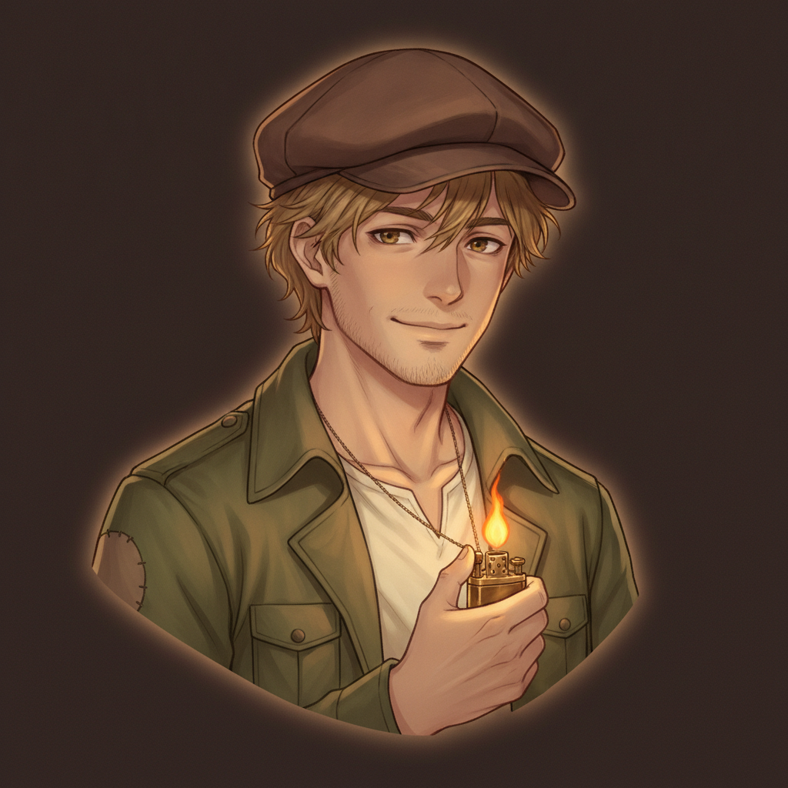
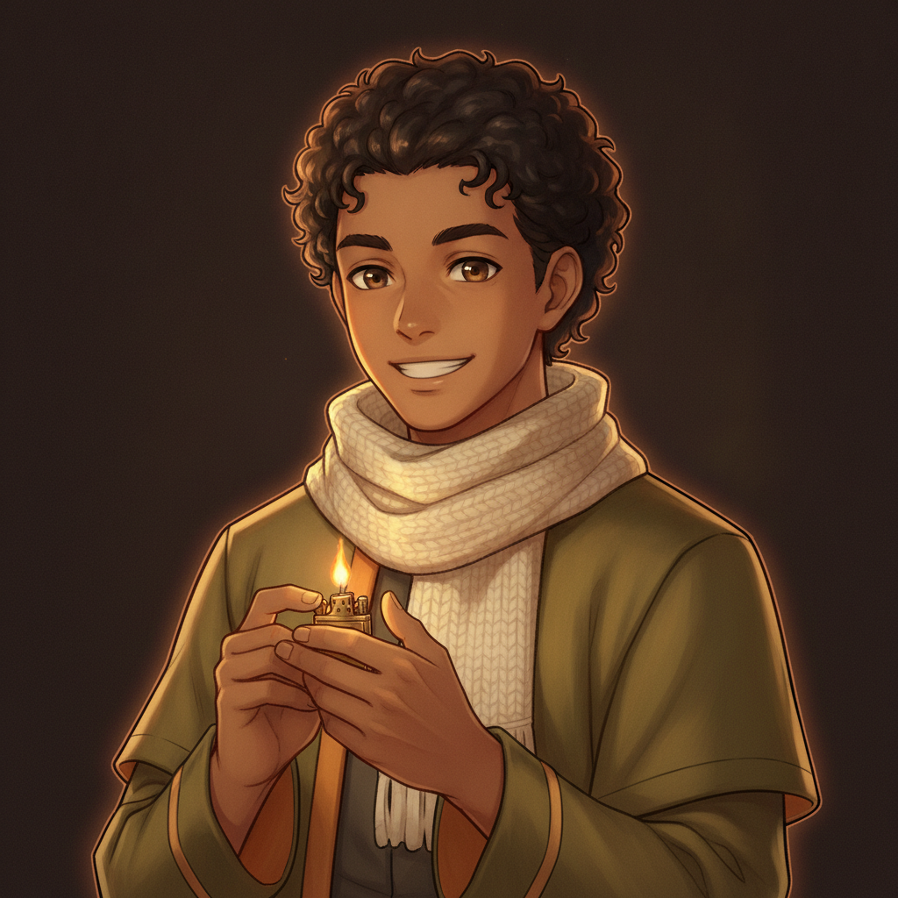
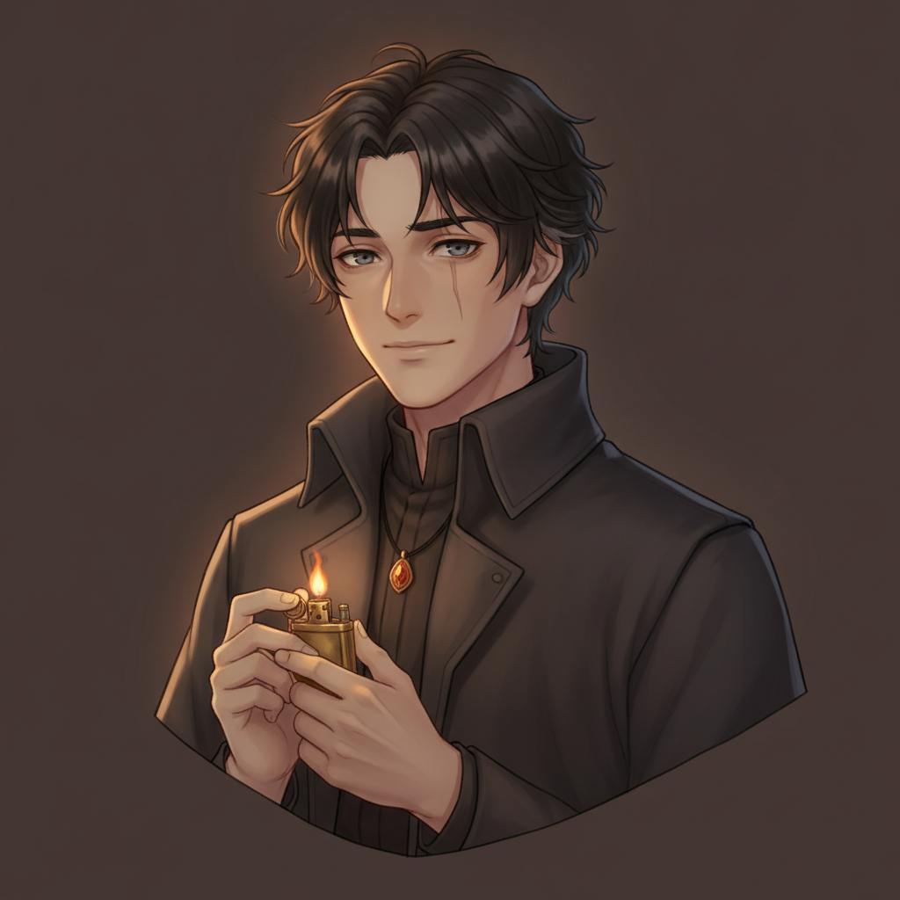
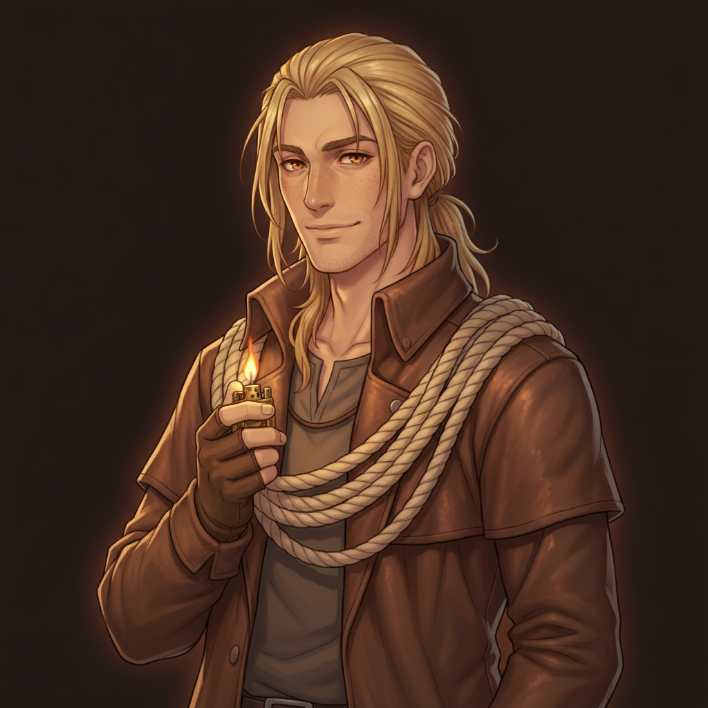
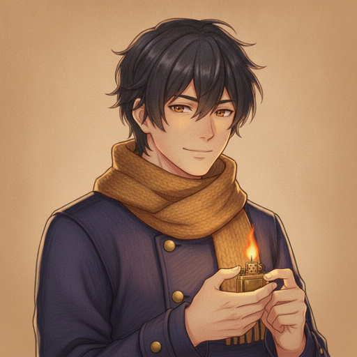

five different character designs (same soul: a gentle lamplighter, the ever-lit brass lighter) · the current Cole is last for comparison · pick one and it goes through the full playbook: pencil bust → expressions → pixel sprite
D1 · the boy next door

tousled sandy-blond hair, worn brown flat cap, hazel eyes, shy lopsided smile, light stubble; moss-green field jacket with patched elbows, cream henley, lighter on a fine chain.
D2 · the tinkerer
neat black hair with an undercut, round brass goggles pushed up, curious dark eyes, earnest expression; patched navy work coat, leather tool bandolier, work gloves.
D3 · the radiant one

warm brown skin, dark tightly-curled hair, kind deep-brown eyes, broad easy smile; olive-gold long coat with ember-orange lining, cream knit scarf.
D4 · touched by the flame

dark hair streaked early-grey at the temples, faint scar through one eyebrow, quiet storm-grey eyes, soft melancholy half-smile; high-collared charcoal coat, glowing ember pendant.
D5 · the wick-runner

tall and lanky, long straw-colored hair tied back, sun-weathered freckled face, warm amber eyes; weathered travel duster, fingerless gloves, coil of lamp-wick rope on one shoulder.
current Cole (for comparison)

tousled black-indigo hair, amber-brown eyes, indigo wool coat with brass buttons, mustard-amber knit scarf.